The energy transition is an incredible journey. We are looking for students with the drive and passion to make the journey possible.
02.11.2022
Stavanger
Trainee Engineer
We are Subsea7 , a world-leading contractor in the oil, gas, and renewable industry. We are collaborative, curious, and always open to learn.
Our people bring new perspectives and smart technology to some of the most challenging and inspiring energy projects around the world.
Diversity makes us smarter. You will be surrounded by a diverse, international community of experts, who bring different skills and ideas that
help us challenge the status quo and inspire innovation.
The energy transition is an incredible journey. We are looking for students with the drive and passion to make the journey possible.
This is a great opportunity to come and work with us; learn about what we do and what it means to work for Subsea7.
You will follow an engineer’s daily work where you will be assigned with both interesting and challenging work tasks.
We will give you the chance to network with experts and to develop your technical and non-technical skills.
Minimum requirements:
3rd or 4th year student, typically in one of the following engineering disciplines:
Mechanical, Civil, Geotechnics, Structural, Marine/Naval Technology, Material Technology, Power distribution, Offshore Technology, Energy and Environmental Engineering or Applied Physics and Mathematics.
Good verbal and written English.
Work period:
Mid-June to mid/end of August. We will prioritize students that can work through the whole period.
Do you want to elevate your knowledge and gain valuable experience from COWI – a pacesetter in sustainability? Join our summer internship, COWI Try! You’ll work with actual, on-going projects in close companionship with our leading experts on some of the most prestigious Energy projects in Norway. Together with the other COWI Try students, you’ll participate in an innovation project. Working in interdisciplinary teams you will explore new and innovative solutions that push a sustainable development and liveable societies.
09.11.2022
Oslo
Summer Intern
Do you want to elevate your knowledge and gain valuable experience from COWI – a pacesetter in sustainability? Join our summer internship, COWI Try! You’ll work with actual, on-going projects in close companionship with our leading experts on some of the most prestigious Energy projects in Norway. Together with the other COWI Try students, you’ll participate in an innovation project. Working in interdisciplinary teams you will explore new and innovative solutions that push a sustainable development and liveable societies.
Former COWI Try students say the internship provides valuable learning in a friendly workplace.
WHO ARE WE LOOKING FOR?
We are looking for a Summer Intern – Structural, Marine and Mechanical Engineer student to join COWI Try. Is this a description that suits you and your background?:
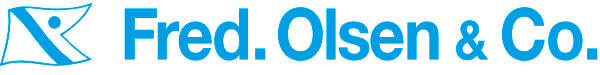
Fred. Olsen Windcarrier provides efficient and cost-effective transport, installation, and service solutions to support you across every stage of the wind farm lifecycle. We are committed to the future of offshore wind energy, supplying industry-leading expertise, solutions, and hardware to help you establish tomorrow’s offshore wind gigaparks.
Are you looking for an exciting summer internship within the maritime industry and offshore wind?
14.10.2022
Oslo
Summer internship
Fred. Olsen Windcarrier provides efficient and cost-effective transport, installation, and service solutions to support you across every stage of the wind farm lifecycle. We are committed to the future of offshore wind energy, supplying industry-leading expertise, solutions, and hardware to help you establish tomorrow’s offshore wind gigaparks.
Are you looking for an exciting summer internship within the maritime industry and offshore wind?
Duties and responsibilities
You will be working in our engineering department with various tasks. The job will primarily be to structure data related to our previous and ongoing projects, and gather insights related to our operations. The tasks will be established prior to, and during the internship, as relevant tasks will depend on the candidates’ background and company needs at that time. Typical tasks will be:
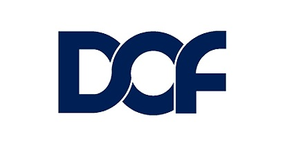
It is in our DNA to move
Curiosity and drive to change quickly is in our DNA. DOF has transformed several times through our history, not for the sake of our image, but to move towards a sustainable future. From fishing to traditional offshore energy and now to offshore renewables. We see moving our experience and the transfer of our competence into new technology, fuels, and fields as part of our everyday assignment!
28.10.2022
Bergen
Trainee
It is in our DNA to move
Curiosity and drive to change quickly is in our DNA. DOF has transformed several times through our history, not for the sake of our image, but to move towards a sustainable future. From fishing to traditional offshore energy and now to offshore renewables. We see moving our experience and the transfer of our competence into new technology, fuels, and fields as part of our everyday assignment!
An adventure in growth and transformation, a legacy from our founders, makes DOF one of the most exciting places to work. DOF´s size and solidity create a safe space to play with ideas, trying always, engineering solutions, and learning from different people.
We offer exciting activities and plenty of opportunity to grow. Our experts will help you to develop your knowledge, skills, and experience in DOF’s core activities.
We are looking for two Maritime Trainees to join the DOF Group: a working environment consisting of highly educated, skilled, positive, innovative, and enthusiastic employees. Here you will be introduced to all aspects of marine operations and progress through different subsea project stages, from tendering to offshore project delivery and marine technology.
We offer a structured, well established 18-month Trainee program in cooperation with the Norwegian Shipowners association. If you are a curious and forward-thinking master´s graduate with technical expertise and a commercial mindset who would like to work closely with people from different parts of the world, then you may be exactly the one we are looking for and we think that you should apply.
Are you the next chapter in our story?
Requirements
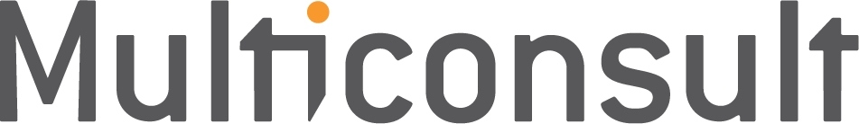
Innen marin teknologi er vi på jakt etter deg som studerer hydrodynamikk, enten marin hydrodynamikk, fluidmekanikk eller andre studieretninger som inkluderer hydrodynamiske beregninger.
17.10.2022
Tromsø
Sommerjobb
Multiconsult er et av Norges ledende miljøer innen prosjektering og rådgivning. Fellesnevneren i alle våre prosjekter er at de skal bidra til å forbedre liv, vekst og utvikling. På den måten er vi, og kanskje snart også du, med på å skape de beste løsningene for fremtiden!
Hva kan du forvente av en sommerjobb eller et sommerprogram i Multiconsult?
Målet med våre sommerjobber er å gjøre deg som student best mulig rustet for arbeidslivet og spennende karrieremuligheter hos oss. For at du skal få et positivt og riktig bilde av hvordan det er å jobbe i Multiconsult, legger vi hvert år ned stor innsats i å tilby spennende, utfordrende og relevante oppgaver i våre sommerengasjement.
Sommerjobben i Multiconsult er en unik mulighet til å bli bedre kjent med Multiconsult som arbeidsgiver, og hverdagen som rådgivende ingeniør. Her får du muligheten til å ta del i pågående oppdrag og fagrelevante oppgaver som forbereder deg til arbeidslivet. Dette kan innebærer alt fra prosjektering, analyse, tegninger og beregninger til befaring på byggeplass og kundemøter. Felles for alle oppgaver er at du vil dra nytte av kunnskapen til våre erfarne medarbeidere, samtidig som du vil få muligheten til å komme med nye perspektiver og ideer.
Gjennom sommeren vil det også bli arrangert sosiale aktiviteter der du får muligheten til å bli bedre kjent med andre sommerstudenter og kollegaene i avdelingen du tilhører.
Hva forventer vi av deg som sommerstudent?
Vi forventer ikke at du skal kunne alt – vi er først og fremst opptatt av ditt potensiale. For at vi som selskap skal kunne utvikle oss er vi avhengig av nye perspektiver, derfor trenger vi deg som er faglig engasjert, nysgjerrig og som tør å utfordre etablerte standarder.
I Multiconsult verdsetter vi relasjonskompetanse på høyde med faglig kompetanse og tror at fremtidens rådgiver er like dyktig på kommunikasjon og samarbeid som på fag.
Hvem kan søke på sommerjobb i Multiconsult?
Vi søker etter deg som er under utdanning på fagskole, høyskole eller universitet, både bachelor- og masterstudenter er av interesse. Du studerer innenfor et fagområde som er relevant for sommerjobben du søker på, og kunne tenke deg en karriere innenfor rådgiverbransjen.
Vi søker fortrinnsvis etter deg som i 2023 starter på det siste året av din utdanning.
Studentene har flere år på rad kåret oss til en av bransjens beste arbeidsgiver. Er du nysgjerrig på hvorfor? Søk sommerjobb i Multiconsult nå!
Hydrodynamikk
Innen marin teknologi er vi på jakt etter deg som studerer hydrodynamikk, enten marin hydrodynamikk, fluidmekanikk eller andre studieretninger som inkluderer hydrodynamiske beregninger.
Bli kjent med fagmiljøet!
I Multiconsult har vi et anerkjent fagmiljø innen marin teknologi og hydrodynamikk, og vi jobber på prosjekter over hele landet.
Som rådgiver i Multiconsult får du muligheten til å ta del i store og små prosjekter som bidrar til bærekraftige og verdiskapende løsninger for samfunnet. Innenfor hydrodynamikk jobber vi i dag med prosjekter som Stadt skipstunnel, ulike utviklingskonsesjoner innenfor flytende havbruk, bølgelastberegninger på havner og kaianlegg, og vi utvikler også egne verktøy for bruk i prosjekter.
Hva får du jobbe med i sommer?
I sommer kommer du til å få jobbe som rådgiver på et eller flere reelle prosjekter som pågår hos oss. Du vil få tildelt en fadder som sammen med andre erfarne medarbeidere vil gi deg tett oppfølging gjennom sommeren. Arbeidsoppgavene vil være tilpasset ditt kompetansenivå, og typiske oppgaver kan for eksempel være hydrodynamiske analyser (eksempelvis fortøyningsanalyser), samt testing og verifisering av våre egenutviklede programvarer.
Høres dette spennende ut? Send oss din søknad i dag. Vi gleder oss til å høre fra deg!
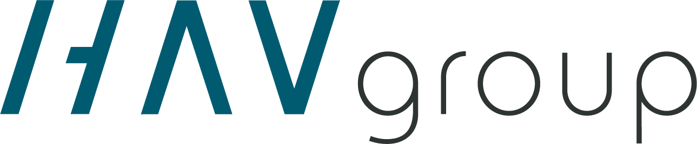
The Group's vision is to contribute to the global green energy transition and accelerate the shift towards zero-emission operations with innovative solutions and high-end products. Our experience and expertise, as well as our focus on efficiency, safety and sustainability, lays the foundation for developing and delivering high-quality innovative solutions to customers in the seafood, energy, and transport sectors. Our cross-cutting expertise gives our customers a head start, increases their competitiveness and value creation, helps to reduce their environmental impact and cut emissions, and allows us to offer sustainable solutions to social challenges relating to the environment, food and mobility.
Snarest
Herøy
Write your thesis
Stillingsfunksjon:
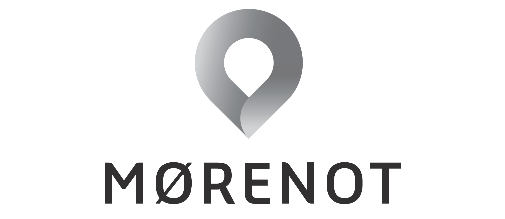
Vi søker en marin ingeniør marinteknisk med kompetanse og kommersiell forståelse
MØRENOT GRUPPEN leverer løsninger for bærekraftig høsting av havets ressurser. Vi er en global leverandør til fiskeri, oppdrett og seismikkindustrien og har 800 dedikerte ansatte innen salg, service og produksjon verden over. Vårt hovedkontor er i Ålesund.
Karmøy
Marin Ingeniør
MØRENOT GRUPPEN leverer løsninger for bærekraftig høsting av havets ressurser. Vi er en global leverandør til fiskeri, oppdrett og seismikkindustrien og har 800 dedikerte ansatte innen salg, service og produksjon verden over. Vårt hovedkontor er i Ålesund.
MØRENOT AQUACULTURE er gruppens oppdrettsdivisjon. Vi har avdelinger langs hele Norskekysten, samt i Skottland, Shetland, Spania, Canada, Danmark, Polen og Litauen. Vi er en ledende aktør innen utvikling og produksjon av løsninger til oppdrettsnæringen.
Mørenot Aquaculture søker Marin Ingeniør til vårt segment, Engineering, som består av kompetente ingeniører, prosjektledere og rådgivere med solid erfaring fra havbruksnæringen.
Som Marin Ingeniør i Mørenot Aquaculture vil du være sentral i vår tekniske avdeling som utfører hydrodynamiske analyser, prosjektering og rådgivning i forbindelse med utforming av akvakulturanlegg i sjø. Dine viktigste arbeidsoppgaver blir å levere tekniske tjenester av høy kvalitet til våre kunder, samt bidra i utvikling av Mørenot Aquaculture sine produkt og tjenester.
Engineering-segmentet har et tett samarbeid med de andre produktsegmentene i selskapet, så i tillegg til ingeniørteknisk arbeid, vil du få god erfaring med marked, utvikling og prosjektering av havbruksløsninger helt fra idé til ferdig utlagt akvakulturanlegg. Som Marin Ingeniør i Mørenot Aquaculture vil du ha gode utviklingsmuligheter og direkte kunne bidra til at Mørenot Aquaculture er en foretrukken partner og leverandør av utstyr og tjenester for sjøbasert havbruk.
Arbeidsoppgaver
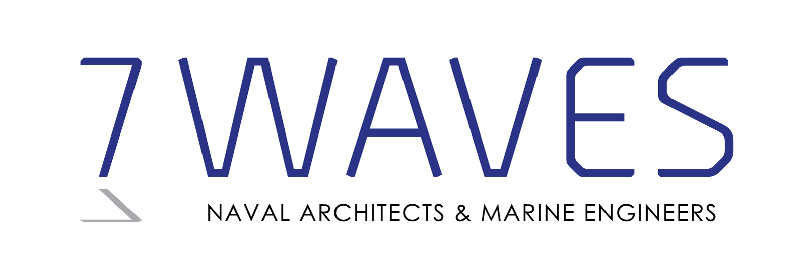
7Waves vokser, og vi er på leting etter nye kollegaer til vårt analyseteam. Har du lyst til å ta del i utviklingen av banebrytende flytende teknologi for fremtidens havnæringer? Høres det spennende ut å videreføre metodene vi har for installasjon og operasjon av mega-vindturbiner? Har du ideer til klimatilpassede bruksområder for flytende infrastrukturer? Da kan det hende det er akkurat deg vi trenger.
Son eller Oslo
Naval Architect
Om 7Waves
7Waves ble etablert i 2012 og har sitt hovedkontor i Son, 50 km sør for Oslo. I 2021 åpnet vi en ny avdeling i Oslo sentrum. På våre 10 år har vi bygget oss opp en variert prosjektportefølje innen offshore vind og eksponert havbruk. Vi har blant annet vært involvert i installasjonen av nærmere 1000 vindturbiner og bidratt med konstruksjonsanalyser, transportanalyser og design av verdens hittil største eksponerte oppdrettsanlegg. 7Waves har også bred erfaring med flytende plattformer samt FPSO- og LNG-prosjekter. Med både nasjonale og internasjonale kunder tar 7Waves del i prosjekter som realiseres over hele verden.
Om stillingen
Arbeidsoppgaver
Vi søker sommerstudenter som ønsker å bruke og videreutvikle sine ferdigheter innen hydrodynamikk og struktur. Gjennom en sommerjobb i 7Waves vil du få innblikk i hvordan vi jobber, få relevante arbeidsoppgaver og mulighet til å være med på spennende prosjekter.
Son eller Oslo
Sommerstudent
Om 7Waves
7Waves ble etablert i 2012 og har sitt hovedkontor i Son, 50 km sør for Oslo. I 2021 åpnet vi en ny avdeling i Oslo sentrum. På våre 10 år har vi bygget oss opp en variert prosjektportefølje innen offshore vind og eksponert havbruk. Vi har blant annet vært involvert i installasjonen av nærmere 1000 vindturbiner og bidratt med konstruksjonsanalyser, transportanalyser og design av verdens hittil største eksponerte oppdrettsanlegg. 7Waves har også bred erfaring med flytende plattformer samt FPSO- og LNG-prosjekter. Med både nasjonale og internasjonale kunder tar 7Waves del i prosjekter som realiseres over hele verden.
Om stillingen
Arbeidsoppgaver
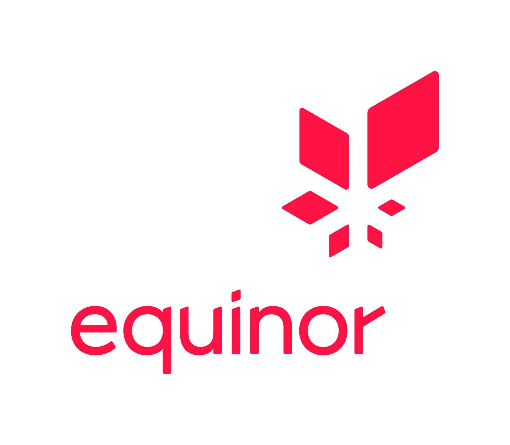
As a summer intern at Equinor, you will join 21,000 colleagues delivering oil, gas, wind, and solar power to 170 million people worldwide. By 2050, we aim to become a net-zero company and provide the energy the world
needs without contributing to global warming. It is one of the defining challenges of our time, and
attracting and developing the brightest minds will be critical to our success.
Nov 15 2022
Stjørdal, Stavanger, Harstad, Bergen
Summer Internship
As a summer intern at Equinor, you will join 21,000 colleagues delivering oil, gas, wind, and solar power to 170 million people worldwide. By 2050, we aim to become a net-zero company and provide the energy the world needs without contributing to global warming. It is one of the defining challenges of our time, and attracting and developing the brightest minds will be critical to our success.
The position
Our summer internship is a 6-week programme designed to provide the experience and skills you need in your studies and future career. Our Norwegian and UK internship will begin on 19 June and ends on 4 August 2023, with one week off starting 17 July. You can find out more about the programme at www.equinor.com/careers/summer-interns
By joining this position within Offshore structure and Marine Technology in Global Operational Technology (GOTE), interns may be offered technical challenges, tasks and group work within offshore structure, marine systems, and digitalization and technology at our offshore facilities for oil and gas in production, and new builds in addition to the common summer internship programme.
Your exact assignment will be decided based on our business needs, combined with your field of expertise and your interests, within
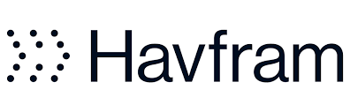
Since Havfram was established 11 years ago, we have secured significant market shares, and have grown to be a recognized subsea and offshore wind contractor with a global footprint utilizing a variety of specialised
fit-for-purpose vessels.
Graduate Engineer
About us:
Since Havfram was established 11 years ago, we have secured significant market shares, and have grown to be a recognized subsea and offshore wind contractor with a global footprint utilizing a variety of specialised fit-for-purpose vessels.
Havfram provide full EPCI (Engineering, Procurement, Construction and Installation) services within the area of marine and subsea operations, offering turnkey solutions in the following segments:
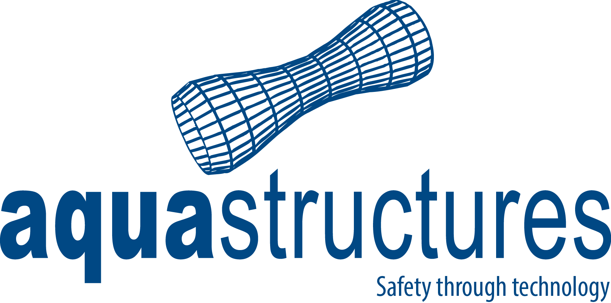
Aquastructures søker deg som er ferdig med studier våren 2023, og som har interesse for beregninger og analyser på flytende og faste konstruksjoner til havs. Aquastructures utfører beregnings- og analyseoppdrag innen ulike markeder, med fokus på havbruk og fornybar energi. Som teknisk ingeniør hos oss vil du ha frihet under ansvar og store muligheter til å forme egen arbeidshverdag. Det er kort vei fra idé til beslutning, og du vil kunne være med på å styre egen utvikling i et voksende selskap basert på dine sterke sider og interesser.
Snarest
Trondheim, Oslo, Bergen, Rørvik, Tromsø eller Alta
Teknisk ingeniør
Aquastructures søker deg som er ferdig med studier våren 2023, og som har interesse for beregninger og analyser på flytende
og faste konstruksjoner til havs. Aquastructures utfører beregnings- og analyseoppdrag innen ulike markeder, med fokus på
havbruk og fornybar energi. Som teknisk ingeniør hos oss vil du ha frihet under ansvar og store muligheter til å forme egen
arbeidshverdag. Det er kort vei fra idé til beslutning, og du vil kunne være med på å styre egen utvikling i et voksende
selskap basert på dine sterke sider og interesser.
Vi bidrar til norsk innovasjon og grønn omstillingen ved å være en naturlig partner i flere spennende prosjekter både
kommersielt og innen akademia. Vi stiller med tung teknisk kompetanse i vurdering, evaluering og verifisering av konsept,
ofte med bakgrunn i analyser vi selv utfører. Analyser du vil kunne gjøre som ingeniør hos oss er bl.a. styrkeanalyser,
stabilitetsberegninger, bølgeberegninger og forankringsanalyser.
Vi utfører beregninger og analyser først og fremst i det egenutviklede analyseprogrammet AquaSim. Videreutvikling, testing,
kursing og support på AquaSim vil være en del av ingeniørhverdagen, i tett samarbeid med utviklingsavdelingen og
lisensierte brukere.
Ønskede kvalifikasjoner:
The autonomous team in Trondheim is now searching for 2 summer students to join us working with state of the art ship autonomy development for the summer 2023.
23.10.2022
Trondheim
Summer Job
Technical Advisory, a part of Maritime Advisory in DNV, is looking for a group of students to join us during the summer of 2023.
30.10.2022
Høvik
Summer job
As a summer student in Class Digital Development, you will work in a project team, solve real industry problems, and be peronsally guided by our technical experts.
30.10.2022
Høvik
Summer job
Our team of 100 engineers deliver world class services that range from early concept, through detailed design and operations, to decommissioning and abandonment for riser, cable, pipeline and subsea production systems.
30.10.2022
Høvik
Summer job
Our Managers in DNV are now looking for students for our summer jobs for the summer of 2023.
Managers will select summer students based on their business needs aligned with your education, experience and background. Please indicate your master program specialization and/or main area of study during the application process.
30.10.2022
Høvik
Summer job
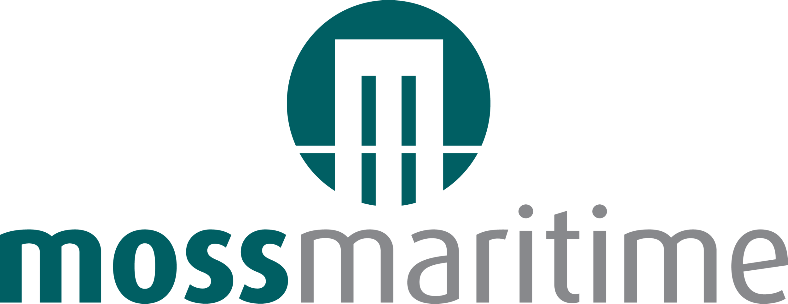
Moss Maritime develops new and technologically advanced products for the maritime industry as well as providing high value and niche engineering competence and services to our clients.
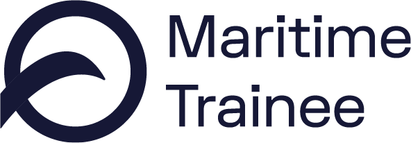
VARD is aiming to lead the green and technological transition in maritime operations. Now we are looking for two Maritime Trainees to join us on our future headed journey.
12.11.2022
Ålesund
Full-time
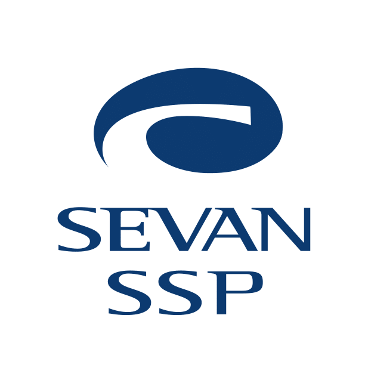
Sevan is a technology-driven, design and engineering company with focus on our unique cylindrical hull design. Sevan has been an innovator within floating offshore structures for 20 years, serving the oil & gas sector. We have now entered the green energy sector and are heavily involved in R&D and technology development. We are also developing systems for integrity monitoring and increased engineering efficiency.
01.11.2022
Oslo (Lysaker), Arendal and Bergen
Graduate Engineer
Sevan is a technology-driven, design and engineering company with focus on our unique cylindrical hull design. Sevan has been an innovator within floating offshore structures for 20 years, serving the oil & gas sector. We have now entered the green energy sector and are heavily involved in R&D and technology development. We are also developing systems for integrity monitoring and increased engineering efficiency.
30.11.2022
Oslo (Lysaker), Arendal and Bergen
Project (full time for 6-8 weeks)
BW LNG is a leading developer, owner and operator of floating gas infrastructure solutions. Our Shipping unit brings LNG to where it is needed, and our Gas Solutions unit develops, owns and operates floating gas infrastructure.
31.10.2022
Oslo
Summer Intern